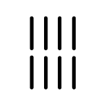
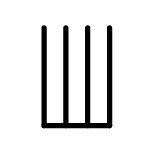
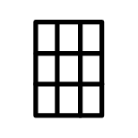

Sign
M112
Looks like: seven short strokes, four over three
Open Indus description, written from the drawing. This describes the picture, not the meaning: a sign that looks like a fish may stand for a sound or another word.
Appears in 54 texts (70 uses), mostly on seals at Mohenjo-daro; usually sits inside a text. In the larger ICIT corpus its Wells equivalent W017 is in 65 texts, including at Dholavira.
Where it appears 54
Counts are distinct texts in the Mahadevan 1977 concordance (a text repeated on many moulded tablets counts once). 70 objects in all carry it.
| Object | Texts | Share |
|---|---|---|
| Seal | 45 | 83% |
| Sealing | 3 | 6% |
| Tablet | 2 | 4% |
| Copper tablet | 3 | 6% |
| Pottery | 1 | 2% |
| Site | Texts | Share |
|---|---|---|
| Mohenjo-daro | 31 | 57% |
| Harappa | 18 | 33% |
| Kalibangan | 3 | 6% |
| Lothal | 2 | 4% |
| Where | Uses | Share |
|---|---|---|
| First sign | 13 | 24% |
| Inside | 41 | 76% |
| Last sign | 0 | 0% |
| Whole text | 0 | 0% |
Position counts use only texts with no damaged passage (54 uses).
In the ICIT corpus (Wells numbering)
W017: 65 distinct texts, 82 uses. Wells lumps it with M110, so these counts cover both.
By object: seals 47, tablets 8, pottery 4, copper tablets 4, other objects 1, sealings 1. Top sites: Mohenjo-daro 34, Harappa 21, Kalibangan 3, Alamgirpur 2, Dholavira 2, Allahdino 1.
Variants
Wells (ICIT) equivalent: W017.
Probably the same sign (looks alike and is used alike):
- M121drawing similarity 0.80, context similarity 0.85
Looks alike but used differently (probably a separate sign):
 M95drawing similarity 0.88, context similarity 0.41
M95drawing similarity 0.88, context similarity 0.41
Pairs from the prior project’s allograph model (image × distribution, signs with at least 8 uses).
Merged with other signs in alternative sign lists (used to test whether findings survive):
- Numerals merged by value
 M110 M111
M110 M111 - All proposed merges M110 M111
- Merged by drawing (medium) M95

M114 - Merged by drawing (coarse) M95 M114

M189 M190
M190 
M245
Neighbours and fixed pairs 2
Signs read directly before or after it, counted in distinct texts, never across a line break or damage.
Fixed sequences in the functional reading
Published readings 3
- Parpola · 2010Did not hold
eḻu-mīn ‘seven stars’ = Ursa Major (Seven Sages); whole text of seal H-9
Parpola 2010, ‘A Dravidian solution to the Indus script problem’ (Coimbatore), Parpola 1994 Deciphering the Indus Script (CUP) · test record
Seven plus fish is not a fixed pair the way six plus fish is (finding 5).
- Parpola · 2010Not tested on its own
oru, iru, mū, nāl, cay/aintu, aṟu, eḻu (Proto-Dravidian numerals)
Yajnadevam’s sound value
- Yajnadevam · 2024Did not hold
s
Yajnadevam 2024 ‘A cryptanalytic decipherment of the Indus script’; per-sign key from yajnadevam/lipi xlits.csv via sources/field-cady_indus_valley_script_corpus/xlits.csv · test record
Part of a 714-value sound key that scores no better than keys fitted to noise (atlas 1.1).
From proposals.json and CATALOGUE.csv. A claim is listed under every sign it names.
Project tests 11
Role in the text
- Positional class
- Unclassified. Its raw label was numeral, but it did not keep that label reliably. Grammar
- Functional reading
- NUMERAL(short) 1.00. Short-stroke numeral 7. two stroke systems with complementary heads (shaunmortal F2/F5/F8, ICIT replicated); numeral precedes head Functional reading
Role names such as opener or noun are labels for positions, not tested meanings.
Mentioned in 11 result files
- reg_chrono: does sign use change with decimal depth inside one site?4 lines. “No single sign passes BH across the 136 sign tests. The best is M112 (short numeral 7) at Mohenjo-daro, which runs later: z = 3.3, n = 10, q = 0.054. It goes the same way at Harappa (z = 1.8).”
- Copper tablets: calendar series, tallies or amulets?2 lines. “T06 8/10/10 goat-antelope, twirled horns M70 M112 M194 M18 M211 M87 M169 horned-U x9”
- Structure of the Indus texts: direction, inventory, positional classes, segmentation, grammar2 lines. “…ke. Stroke signs, identified by drawing, are spread over core (M99, M87, M89, M102, M97, M98, M104, M112, M121) and opener (M86, M106, M109, M103). With context features (PPMI neighbour profiles), no…”
- Internal phonetics: does Indus spelling variation leak sound values?1 line. “…pirical p, 8 further dissimilar pairs reached q≈0.048. All are slot paradigms (numerals M102\ M106, M112\ M245; closers M15\ M342; M204\ M205; M341\ M373; M124\ M348; M135\ M296). They come from a fir…”
- Language hypotheses: results (historical-linguistics tester, 2026-11-14)1 line. “P1b 7 + fish = ēḻu-mīn (Ursa Major) P(fish \ 7) raised 1/60 = 1.7%, depleted (binomial p = 0.0025); held-out 0/13. The 7-sign M112 goes with M194/M197 (copper tablets, F7) and M342 refuted”
- Novel methods from other fields: results1 line. “{M343, M344, M345, M328, M112, ...}: the jar+stroke and cup group. Note it is separate from the M342 class.”
- Grammar of the Indus number signs (Fable 5.2 plan 3, R1: the Proto-Elamite method)1 line. “T3+S7: 4 / 4. All of these are M336 M89 followed by M112 M194.”
- Pair graph, numeral distributions, long texts (Fable 5.2 plan F1, F2, F6)1 line. “…ut:* as STATE F7 found, the modal value is usually tied to one particular numeral sign (for example M112, the 4-over-3 layout of 7, before M194/M197). “Number-name” therefore means numeral sign + head…”
- Red team: pair_numeral_long claims A (number-names), B (counted items), C (long texts)1 line. “…al signs occur inside fixed multi-sign formulas (tall-2 + fish, the M336-M89-M211 block, M103-M403, M112-M194/M197).” The individual names other than M59 rest on 0-4 held-out tokens each.”
- Counts quoted to Yajnadevam (descriptive, not a test)1 line. “…2 P1). All M77 distinct texts: six-stroke (M108/M109) followed by fish 12 of 28; seven-stroke (M110–M112) 1 of 60; identical for plain fish M59 and the fish family. Pooled numeral rate 12.9% (fish fam…”
- A positional grammar of the Indus seal text1 line. “c4 numeral 0.066 0.07 0.05 0.24 / 0.70 / 0.06 M87 0.38, M171 0.17, M102 0.15, M112 0.10, M373 0.06, M233 0.03, M125 0.02”